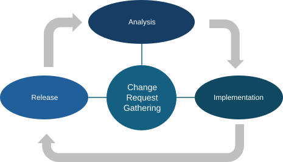
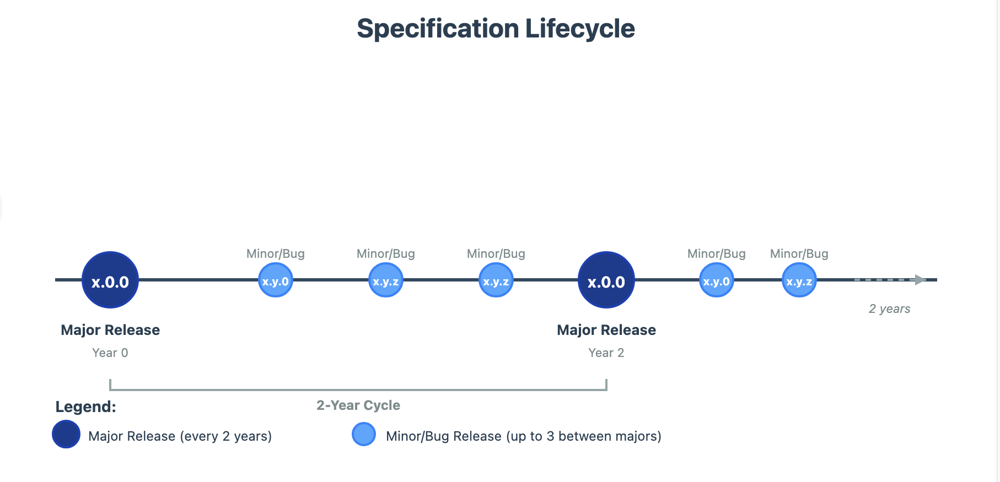

1. Governance & Lifecycle
This section describes how the Reference Architecture is governed, maintained, and evolved through defined governance and lifecycle mechanisms. The evolution of the Reference Architecture follows a user-centric, problem-solving approach, ensuring that it is continuously maintained and adapted to provide maximum support to user needs.
The current specification, which documents the Reference Architecture, constitutes one of its release components and is therefore subject to the lifecycle described below. However, the maintenance of this document has certain specific characteristics, which are addressed later in this section.
1.1. Maintenance and evolution of the Reference Architecture
To remain relevant, usable, and aligned with evolving interoperability needs, the Reference Architecture is subject to continuous maintenance and controlled evolution. This section describes the mechanisms through which changes are identified, assessed, implemented, and released. It establishes a structured change management lifecycle and a corresponding versioning scheme, ensuring that evolution is predictable, transparent, and aligned with user needs while preserving architectural coherence and stability.
1.1.1. Change Management process - lifecycle
The Reference Architecture is maintained through a formal change management process organised as a continuous cycle. This lifecycle ensure that changes requests are systematically collected evaluated, and implemented, while providing clarity on their scope, impact, and release implications. The change management process consists of the following steps:
Requirements gathering: A continuous process through which potential improvements are gathered and classified. Each change request is described and categorised according to its scope (bug/patch, minor, or major).
Change requests analysis: Based on the description and the scope, and the urgency of the requests, these are analysed with two objectives:
1) to develop a detailed understanding of the proposed modifications and their impact on the Reference Architecture;
2) to determine the type of release required (major, minor, or bug/patch).
Change requests implementation: Following the analysis and approval, the identified changes are implemented in the Reference Architecture and its associated release components, in accordance with the defined scope.
Release: The final step of the lifecycle, in which the updated Reference Architecture and its release components are formally published and made publicly available.
{kind=link}

Figure 1 Change Management Process Overview
1.1.2. Semantic versioning Scheme
As introduced when describing the change management process, changes to the Reference Architecture are categorised into three types in alignment with the semantic versioning schema [12]: major, minor.
There are three types of changes that are considered in the change management process:
Major changes (Major release). A major change affects fundamental aspects of the Reference Architecture. Examples include the restructuring of core concepts within an EIRA view that has a significant impact on other architectural views or policy domains. Such changes typically affect related solutions and implementations and therefore require a dedicated rollout and transition plan to ensure controlled adoption. Major releases are generally not backward compatible.
Minor changes (Minor Release). A minor change is typically backward compatible and includes, for example, the addition of a new building block or a refinement of an existing definition. Minor releases may coexist across implementations without causing significant interoperability disruptions.
Bug/Patches (Bug Release). A bug or patch release addresses small corrections, such as typographical errors, editorial issues, or clarifications of concepts that were previously ambiguous or insufficiently defined. These changes do not alter the architectural structure or intent.
1.2. Maintaining and evolving the Reference Architecture Specification
This document constitutes a discrete release component of the Reference Architecture, and therefore requires dedicated lifecycle and maintenance provisions. The following figure shows the overall evolution logic of the Reference Architecture and shows how the evolution of this specification is integrated within that lifecycle.
{kind=link}

Figure 2 Specification Lifecycle timeline
The specification is designed to support a sustainable lifecycle while remaining aligned with the latest changes to the Reference Architecture. To achieve this, the document deliberately minimises dependencies on volatile elements, such as exhaustive lists of Architecture Building Blocks (ABBs) or Solution Building Blocks (SBBs). These elements are instead maintained as living resources in GitHub and on the Interoperable Europe Portal.
Following the image above, a new refactored documentation will be created to ensure the alignment with major changes (a major version) as defined above in section Semantic versioning Scheme.
In addition, the specification is published and maintained online and is made available in downloadable formats (e.g. PDF and DOCX) to support reuse, consultation, and offline access.
1.3. Community feedback mechanisms
This section describes the mechanisms and channels through which stakeholders and users can provide feedback and propose changes to the Reference Architecture. Community input plays a key role in ensuring that the Reference Architecture remains relevant, practical, and aligned with real interoperability needs. Feedback can be submitted through the following channels.
1.3.1. The Interoperable Europe Portal Collection [13]
The Reference Architecture is made available through the Interoperability Europe Portal, which serves as the European Commission’s one-stop shop for the publication of interoperable solutions.
Through the general collection for the action and the specific solution for the Reference Architecture, users can contact the EC functional mailbox to provide feedback. This channel enables users to submit comments, suggestions, and requests for improvement related to the Reference Architecture and its release components.
1.3.2. The Interoperable Architecture Solutions GitHub Space
The action also maintains a GitHub space [14] where the different architecture solutions are stored, managed, and published. These repositories constitute the authoritative source for the content published on the Interoperable Europe Portal.
Users can provide feedback directly through these repositories by using the GitHub Issues functionality. As all release components of the EIRA and eGovERA are publicly available. All feedback received through GitHub is processed in accordance with the change management process described earlier in this specification. Regardless of the outcome of the analysis (whether a change request leads to implementation or is rejected) users receive a response explaining the rationale behind the decision.